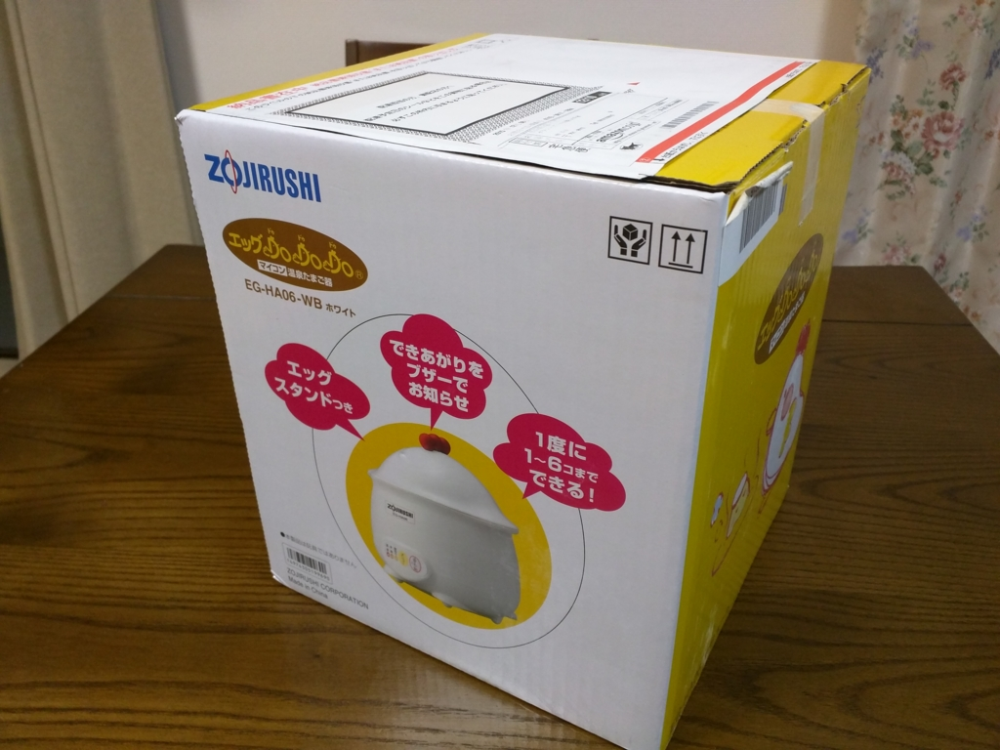
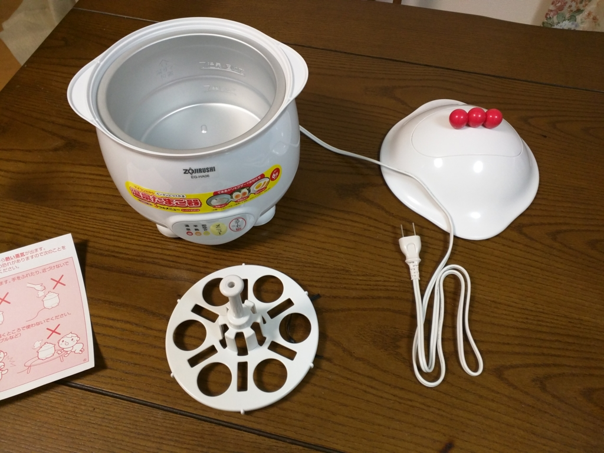
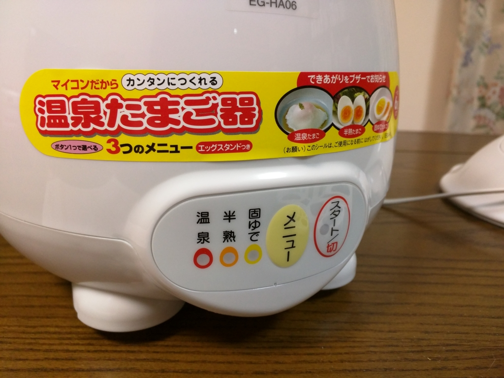
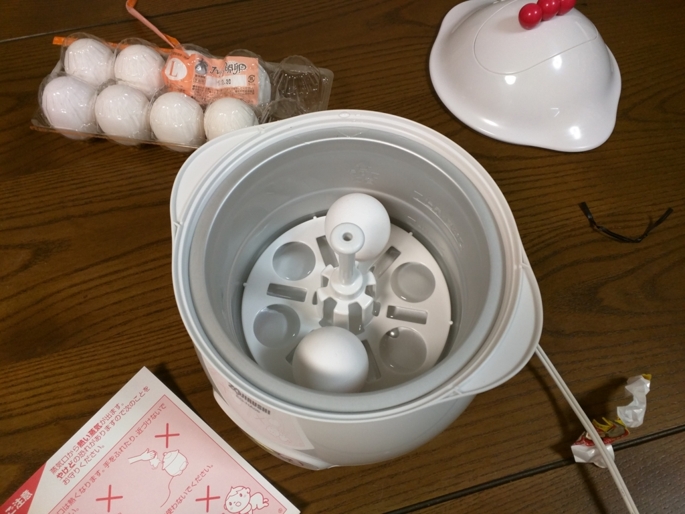
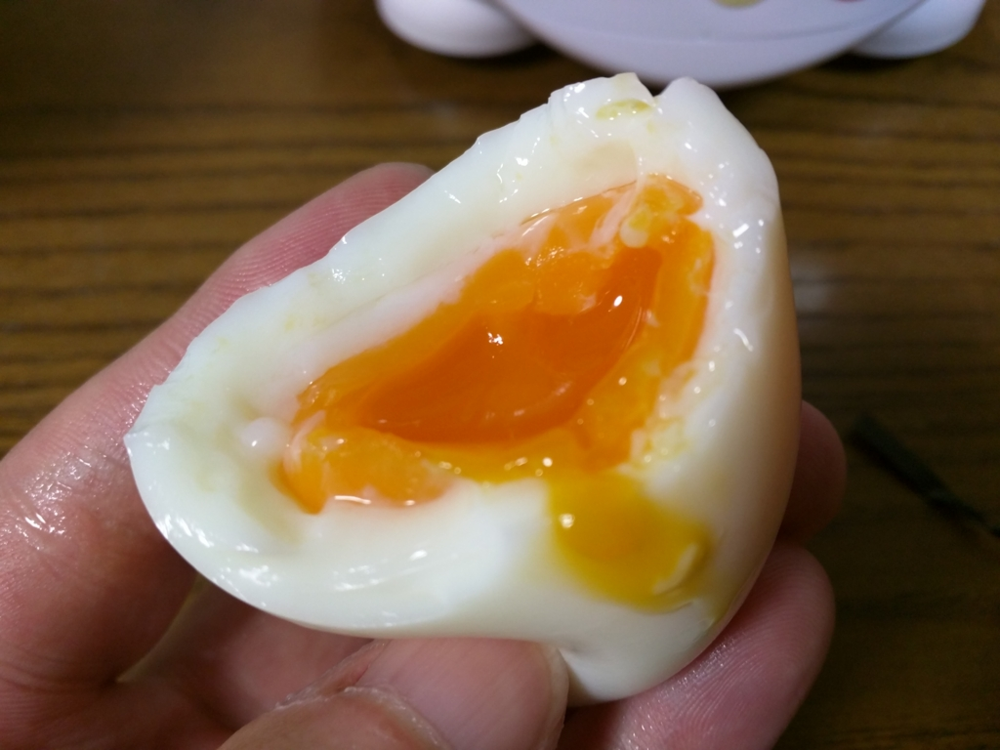
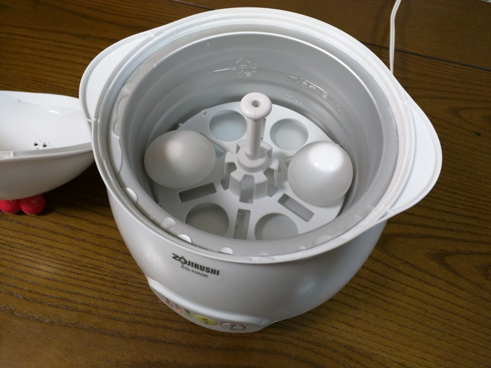
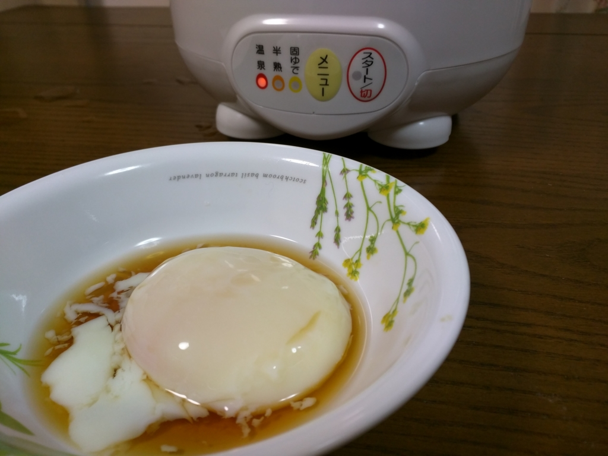
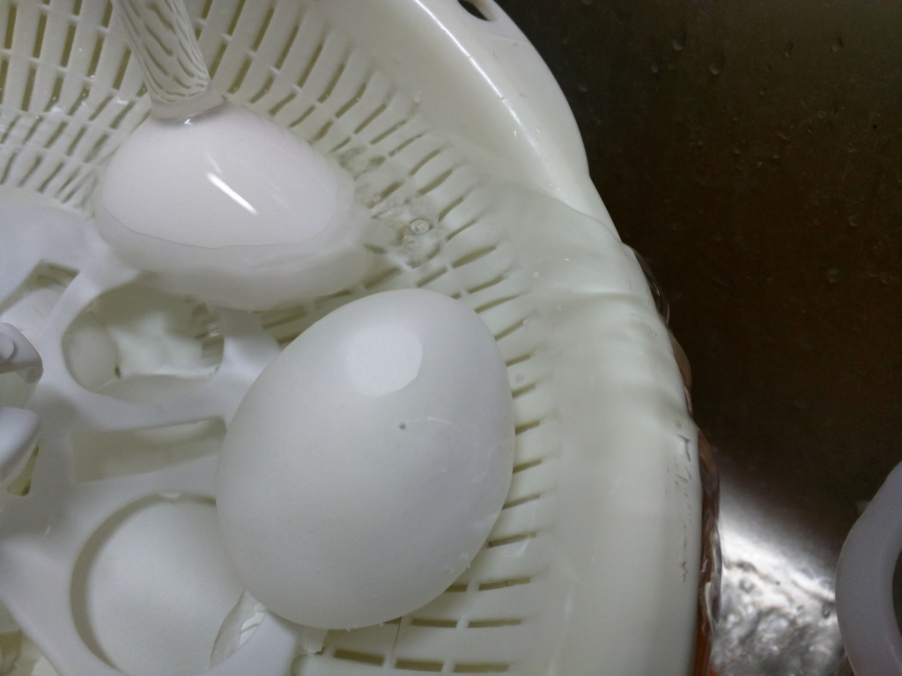

温泉たまご製造機のせいで、昨晩は卵を5個も食べてしまった。
公開日：

象印のマイコン温泉たまご器“エッグ DODODO”（EG-HA06-WB）を買ったった。参考価格10,000円のところを、Amazon で3,791円。どこでもだいたい4,000円ぐらいで買えるみたいやね。

こいつのスゴいところは、卵と水を入れてスイッチを入れるだけで「温泉たまご」「半熟たまご」「固ゆでたまご」が作れるところ。できあがったらブザーが鳴るので、キッチンで鍋が沸騰するのを観察する必要がない。最大積載たまご数は6つだけど、1つでも問題なく調理できるので、家族からおひとり様までカバーできる。もちろん、1個なので硬い、6個だから柔らかいなんてこともない。オレよりも賢いマイコンさまが、いい塩梅に茹でてくれるんや。ニワトリっぽいデザインもなかなかかわいらしいな。

操作方法は簡単で、［メニュー］ボタンをポチポチおして「温泉たまご」「半熟たまご」「固ゆでたまご」のいずれかを選択し、水と卵を入れて、［スタート］ボタンを押すだけ。サルには難しいかもしれんけど、クロマニヨン人程度の知性があればちゃんと使えると思う。

炊飯器みたいに器の内側に水位が書いてあるので、お水の量で迷うこともない。ただ、「半熟たまご」の水位は下の方にあってちょっと見にくいかも。計量カップで250ccを計って入れる方が早い気もする。ちなみに、水の量を減らせば「半熟たまご」の半熟度を高めることもできる。

わしは 180cc で試してみたけど、黄身がとろっとろのデリシャスゆでたまごになった。二つ茹でたけど、一瞬で二つとも食べてしまった……。
でも、180cc だと白身もぷるんぷるんで、殻が剥きにくい。200cc ちょいぐらいにとどめておいたほうがいいかもしれぬ。

ちょっとうれしくなったので、続いて「温泉たまご」にもチャレンジした。「温泉たまご」の場合は「半熟たまご」と異なり、割と上の方まで水を入れる。たまごを沈めるとかなり水位が上がるが、別にあふれるわけでなし、問題はい。
ちなみに、古文書*1によると
- 水の軽量はたまごを入れる前に行う。
- 冷えっ冷えのたまごをいれたり、あつあつのお水を入れない。常温で、常温で。
- たまごはとがったほうを上に入れる。
のが正しいやり方みたい。「半熟たまご」のときはこれを一切無視してやったけど、とくに支障はなかったので、それほど神経質にならなくてもよいみたいだけど。
――待つこと30分ほど。

できた━━━━(ﾟ∀ﾟ)━━━━!!
割とよく見る感じの「温泉たまご」になった。めんつゆにみりん少々などを適当に混ぜてタレっぽいのを作って食べてみたけど、ほんのり温かくて美味だった。これはクオリティ・オブ・ライフがあがりそうやなー またオリティ・オブ・ライフがあがってまうなー
というわけで、この“エッグ DODODO”、だいぶおすすめかもしれない。
もっとも、こういう専門の調理器具がなくても「温泉たまご」は割と手軽に作れるらしいが。マイコン機能がない・お湯を入れて待つだけのタイプならば1,000円そこそこ買えるので、そっちで済ますという手もある。

象印 エッグ DODODO マイコン温泉たまご器 EG-HA06-WB ホワイト
- 出版社/メーカー: 象印(ZOJIRUSHI)
- 発売日: 2009/08/21
- メディア: ホーム&キッチン
- 購入: 4人 クリック: 127回
- この商品を含むブログ (2件) を見る
うれしいポイント
- 全自動でめっちゃ簡単
- ちょっとやそっとでは失敗できないぐらい簡単
- 鍋をかき回しながら10分も瞑想してなくて済む
- 「温泉たまご」だけじゃなく「半熟たまご」「固ゆでたまご」も作れる
うれしくないポイント
- ゆでたまごは鍋＋ガスで作ったほうが早い気がする
- キッチンによっては電気コードの配線がめんどうかもしれない
- 「ゆでたまご」「温泉たまご」しか作れない。4,000円だす価値があるかは人それぞれかも

あと、当たり前やけど茹でたたまごは流水で冷やすんやで。放っておくと殻が剥きにくくなる。小学校のころ、家庭科の授業で習った。
*1:説明書のこと